Abstract
We extended the CS 184 path tracer from a surface-only renderer into an underwater light transport system. Our final renderer models water as a bounded participating medium with wavelength-dependent absorption and scattering, uses a Henyey-Greenstein phase function for the forward scattering look of suspended particles, and adds a refractive glass water surface with Fresnel reflection and transmission. To make underwater shafts of light visible, we implemented direct volume single scattering with equiangular and truncated-exponential multiple importance sampling. To capture harder-to-sample photon paths, we also built a volumetric photon map, a beam-radius-estimation acceleration path, and a surface caustic photon map. The result is an underwater Cornell-box scene with blue-green attenuation, rippled light variation, visible haze, and caustic highlights on submerged objects.
Technical Approach
Our starting point was the CS 184 path tracer, which assumes that space between surfaces is vacuum. That assumption breaks most of the visual cues we expect underwater: red light should disappear faster than blue light, beams should become visible through scattering, and the water-air interface should bend light. We therefore added a medium layer to the renderer while keeping the existing BVH, BSDF, and recursive radiance structure intact.
The water medium stores per-channel absorption
sigma_a and scattering sigma_s. Along
any in-medium segment, surface radiance is attenuated by
Beer-Lambert transmittance:
We tuned the coefficients so red has much larger extinction than blue and green, producing the characteristic underwater shift toward teal with distance. A bounded medium box clips each camera, shadow, photon, and bounce ray to the portion that actually travels through water.
Chromatic underwater medium, Henyey-Greenstein phase function, direct volume lighting, volumetric photon mapping, BRE photon queries, surface caustic photons, wavy medium boundaries, wavy shading normals, and render-stat instrumentation.
Water Surface and Recursive Transport
We implemented mirror, refraction, and glass BSDFs in
advanced_bsdf.cpp. The water surface uses the full
unpolarized dielectric Fresnel equations rather than Schlick's
approximation. At each glass hit, the BSDF chooses reflection or
refraction by Russian roulette using the Fresnel reflectance, and
falls back to reflection under total internal reflection. Because
glass is a delta BSDF, direct lighting is skipped at the surface;
illumination comes from recursively tracing the reflected or refracted
ray.
Direct Volume Lighting
God rays are single-scatter events: light reaches a point in the water, scatters toward the camera, and survives transmittance along both path segments. For a camera ray segment inside the water, we estimate:
Uniformly sampling the segment was too noisy, so we used two sampling strategies from Kulla and Fajardo: equiangular sampling around the light's projection onto the ray, and truncated exponential sampling following extinction from the camera. We combine them with the power heuristic. This was one of the biggest quality wins because it spends samples where the single-scattering integrand is largest.
Photon Maps and BRE
Direct volume lighting captures clean single-scatter shafts, but it does not efficiently find paths that refract through the water surface, scatter in the medium, or focus onto surfaces. We therefore added a photon pass. Photons are emitted from the light, refracted through the analytic wavy water boundary using Snell's law, scattered through the medium with the HG phase function, and stored as volume photon points. Camera rays can gather nearby photons either through a regular 3D grid or through our Mitsuba-inspired beam-radius-estimation mode, where each photon receives an adaptive influence radius and a BVH accelerates ray queries against photon influence boxes.
We also implemented a surface caustic photon map. Those photons follow refracted/specular paths and are deposited on diffuse surfaces, giving the floor and pebble scene the focused light patterns that the biased transparent-shadow shortcut cannot produce on its own.
Waves and Scene Design
Our wave model has two coupled uses. The medium boundary is perturbed by a sum of sinusoids, changing where rays enter and exit water and changing transmittance lengths. Separately, upward-facing glass triangles can use a matching perturbed shading normal, so Fresnel and refraction respond to the same apparent surface shape. We generated underwater demo scenes and a pebble scatter scene to make volume lighting, BRE, and caustic differences visible in final renders.
Problems Encountered
- The first underwater renders were nearly black because shadow rays treated the water surface as opaque. We added a transparent-shadow walker for ideal transmissive surfaces so underwater scatter and diffuse points can see the light.
- Single-scatter god rays were very noisy under uniform sampling. The equiangular plus exponential MIS estimator solved this more effectively than simply increasing samples.
- Early VPM renders had bright blue speckles and blobs. We tuned photon strength, radius, and lookup behavior, then added BRE with adaptive photon radii to make the photon contribution more stable.
- Wavy shading normals and wavy medium boundaries can disagree if they use different height fields. We kept both tied to the same analytic wave function so the surface appearance and volume modulation match.
Implemented Subset and Deviations
We implemented a practical subset of full production volumetric rendering. Our direct volume estimator is physically motivated and uses MIS, while the transparent-shadow path is intentionally biased: it walks through glass without refracting shadow rays, which improves convergence but does not create caustics. We compensate with photon maps for caustic and multi-scatter effects. Our BRE implementation follows the idea of beam-photon queries and adaptive radii, but is scoped to primary camera volume queries by default because secondary BRE lookups were too slow for our renderer.
Results

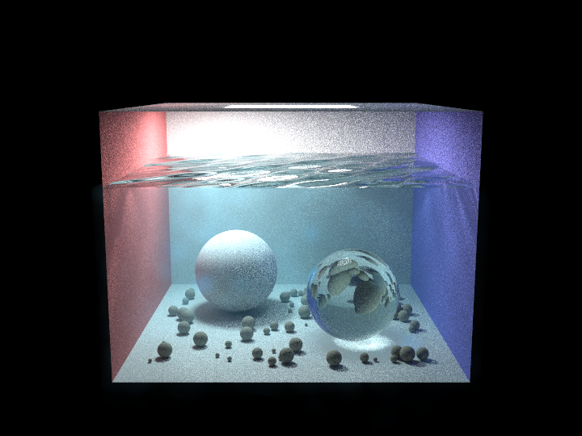
Direct volume / VPM + BRE comparison
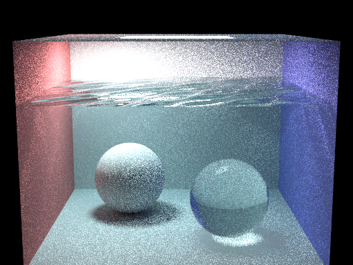
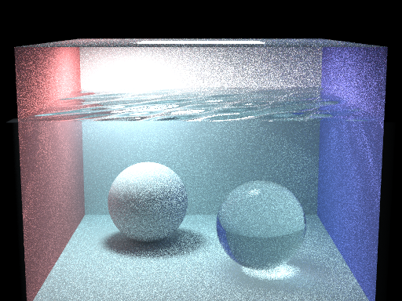
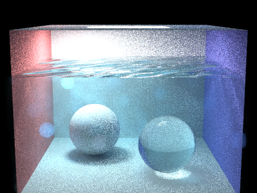
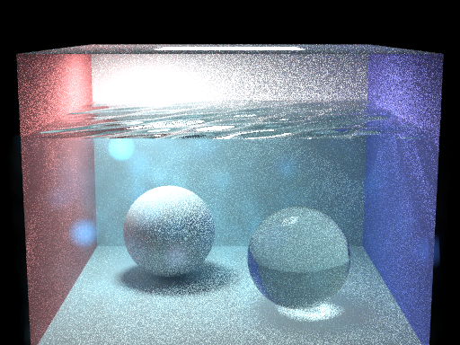
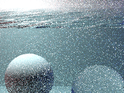
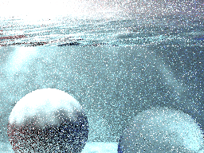
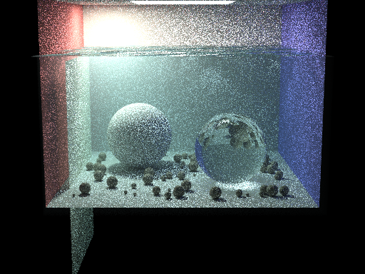
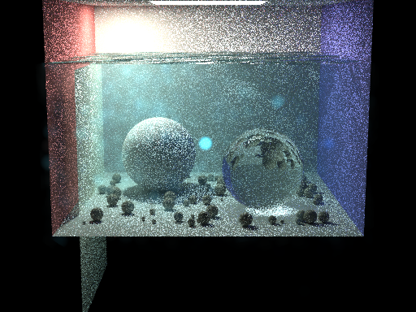
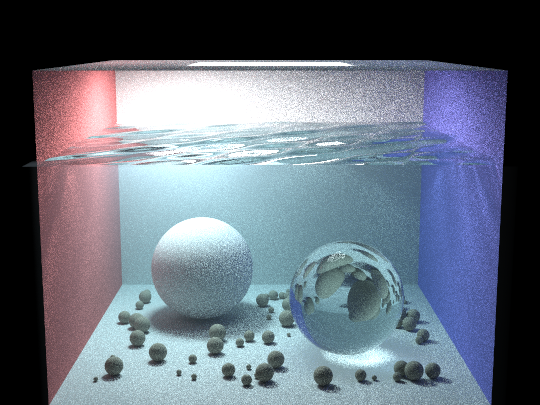
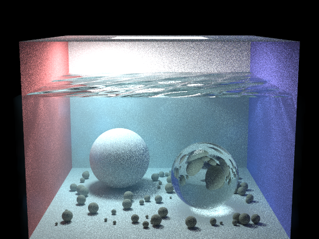
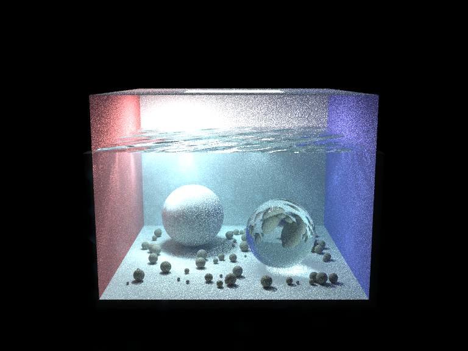
Lessons Learned
Equiangular MIS gave a much larger improvement for god rays than blindly increasing spp, because it matched the shape of the volume integrand.
Transparent shadows are not fully physical, but they made the scene renderable while photon maps handled the missing caustic paths.
The regular BVH was enough for surfaces, but photon queries needed a grid and then BRE/BVH support to remain practical.
Pebbles, canopy cards, and wavy boundaries made subtle volumetric differences easier to see and debug.
References
Course / Code Base
- UC Berkeley CS184, HW3 Path Tracer assignment and starter code. We used this as the base renderer, scene loader, BVH framework, and path tracing application structure.
- CS184 course framework and CGL utilities. We built on the provided vector, matrix, image, viewer, COLLADA, and utility infrastructure.
Core Rendering
- Pharr, Jakob, and Humphreys, Physically Based Rendering: From Theory to Implementation, 4th edition.
- Kulla and Fajardo, Importance Sampling Techniques for Path Tracing in Participating Media, EGSR 2012.
- Jarosz, Nowrouzezahrai, Sadeghi, and Jensen, A Comprehensive Theory of Volumetric Radiance Estimation using Photon Points and Beams, ACM TOG 2011.
- Jensen, Global Illumination using Photon Maps, Rendering Techniques 1996.
Project-Specific
- Akkaynak and Treibitz, A Revised Underwater Image Formation Model, CVPR 2018.
Contributions
Implemented the glass BSDF with dielectric Fresnel equations and total internal reflection. Built transparent shadow traversal through transmissive surfaces, set up underwater DAE scenes, and helped debug glass-medium interactions.
Implemented volumetric photon tracing, HG-weighted photon scattering, photon storage and gathering, and integration of the photon contribution into the main radiance estimator. Wrote scene generation scripts and helped debug recursive glass transport.
Implemented the participating medium infrastructure, chromatic Beer-Lambert attenuation, Henyey-Greenstein phase evaluation, and wavy medium boundary perturbation. Tuned underwater optical coefficients and helped validate wave consistency.
Implemented direct volumetric lighting with equiangular and truncated-exponential MIS, added wavy water shading-normal perturbation, produced the final render comparisons, and assembled the final report webpage.